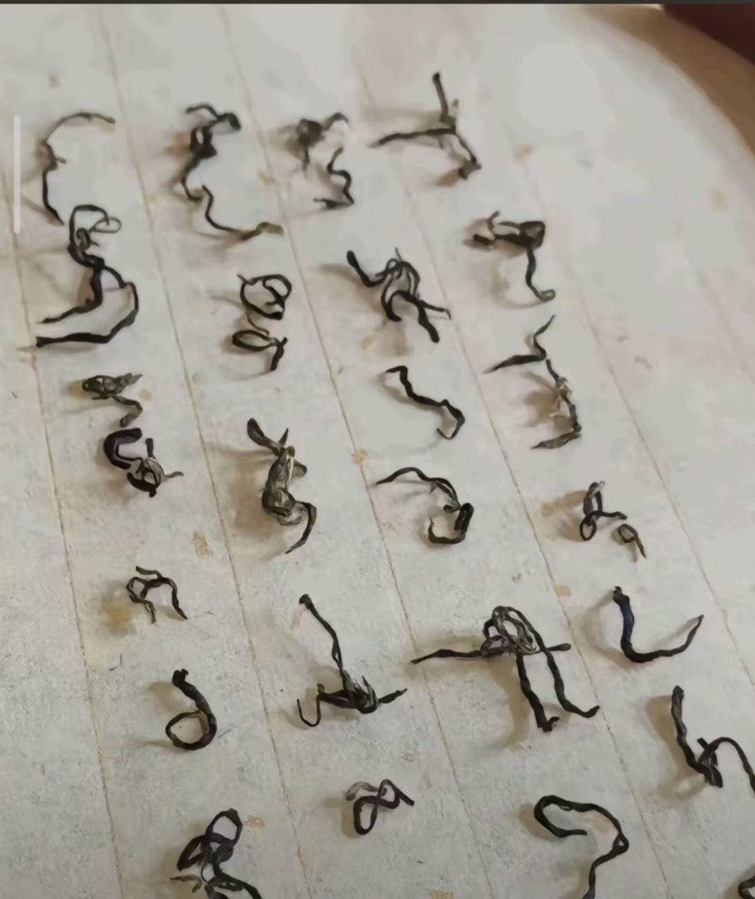

人不能止步于太低俗的欲望，它会让你困于肉体或物质浅层的享受直至失去快感；人亦不能沉湎于太过缥缈的幻梦，它会让人忘却身边触手可及的生命与健康等基本幸福，最终迫使真正的生活被架空。 作为独立的个体，偶尔需要横向比较来激励自己，也要学会纵向反观自己现在所拥有的所有东西并去肯定自我；作为共同生活的夫妻，生活更多应该是共同携手向好而非牺牲，是理解而非互相刺痛。我并未经历过婚姻，可是父母几十年从未说过伤透对方的话，在自我的认知里，真正的爱是不会舍得让镜子破碎的，在明知破镜难圆的情况下。
小宝终于开窍了
大宝能把你房算没，还给你贷个款还到闭眼[捂脸]
最简单的就是不说话，直接走
隔夜不行，预制6个月都可以吃
隔夜菜不要吃预制菜框框的吃[暗中观察][暗中观察]
褚赢我找到神之一手了
我主动结束了一段让我内耗很久的感情，能不能对我说一句你做的真棒[流泪][流泪][流泪][流泪]
恋爱脑太难难杀了，她们会自我安慰自我感动、手机一响，军师白讲。
狗不能喂太饱 人不能对太好 老人的话真没毛病
现实真有这样的女人吗？
老人家分析的非常对，很全面值得重视。
这和咱们小家过日子一样，被孤立的日子确实不好过，但一定要硬挺，不然就是没完没了的被欺负，被瓜分。
人这一辈子啊，一定要学一样乐器，这样才不会有遗憾，我学的是吹牛逼，各位学的啥？？[泪奔]
长大了
[耶][耶][耶][耶][耶]
五百年后的考古队发现这张纸：
五百年后要求学生全文背诵
其实防也防不懂 害也害不明白[绿帽子]
那些打倒我的人 谢谢你们 躺着很舒服
这三个出来我真是爆笑了
把盲人放到跑步机上，给他说一直走就能到家[憨笑][赞]
痛苦如影随形，太好了我有永远的朋友了[憨笑]
躲在被窝里偷哭，结果被窝太温暖睡着啦[惊喜][给跪了]
我这几年 我窝囊过 也窝囊过 窝囊过 也窝囊过 窝囊过 也窝囊过[宕机]
人人都不看好我，偏偏我也不争气。 无人扶我青云志，我自己也上不去。 人人都想欺负我，偏偏我最好欺负。 人人都想看我笑话，偏偏我也最好笑。 与其逼自己一把，不如放自己一马。 人人都说是金子总会发光的， 偏偏我是老铁。
学书法静心，是这么静的对吗[宕机]
出神入化了已经 
富人偷我人生 穷人偷我外卖[流泪]
每天活得像拼多多，看谁都想砍一刀
防人之心我有 害人之心我也多的是 我这个人虽然嘴巴特别毒 但心也特别坏 嘿嘿嘿 吃得苦中苦 就有吃不完的苦 最近有种八十岁老人挑水浇到别人家地的无力感 每天吃一堑吃一堑吃一堑吃一堑 谢谢！我吃饱了~ 痛苦如影随形 太好了！我有永远的朋友了~
生活一波三折 那很便宜了 前途一片黑暗，天黑好睡觉啊 生活千疮百孔，好透气 人生处处是低谷，我全部好价吃掉 那些打倒我的人 谢谢你们 躺着很舒服 前途一片阴暗 那很凉快了 痛苦如影随形，太好了！ 我有永远的朋友了！ 人生总是低谷，好减脂 前途一眼望到头，那视力很好了
他们都看不起我，偏偏我也不争气
生活一波三折 那很便宜了
好，让歹人传下来了
不想拍但怕又打一顿[黑脸]
如果命运是一种天赋[憨笑]
好好笑我弟刚加上我对象
这是我这执行力最强的一次
哥哥跟妹妹=陌生人 姐姐跟弟弟=仇人 姐姐跟妹妹=主人和有脾气的仆人 哥哥和弟弟=奴隶主和他的奴隶[捂脸][捂脸][捂脸]
一看就是自愿的，刚睡醒就拍[愉快]
衣服有没有链接？给我弟买一件
没事，长大和你姐要钱
以后弟弟的对象：你会不会觉得我很作 弟弟：跟我姐比你这不算啥
∵新中国没有奴隶 ∴老弟是自愿穿的 [憨笑][憨笑][憨笑][憨笑]
懂哥哥跟妹妹吗（还差十几岁）光是他站在那里我就已经很害怕了
怎么说服你弟边哭边完成手势舞的[憨笑][OK]
什么神人主播
我成了[憨笑]
听完音乐的我
家里要请达斯维达了[愉快]
把毛坦厂复读班老师全抓起来审问一遍，最后发现没有一个是无辜的[看]
毛坦厂复读班班主任，经常给学生调坐位，起步价二于至五干。应该好査查。
刚上厕所没纸了，突然听了这段音乐，就觉得人生没有什么过不去的坎，不擦了，怀着自信走了出去，从来都没有这么自信过，谢谢你的音乐
片子别卸，我一会做飞鸟
新手就是喜欢大吼大叫的[泣不成声]
给一辈子难过的事全想起来了
怪不得上学写作文老师说开头要抓住读者的心[看]
虎鲸：今天浇了一大堆朋友[捂脸][捂脸][捂脸]
虎鲸不会攻击人类，因为在几万年前，虎鲸和人类是好朋友，那会儿人类也生活在海底，叫杠鲸[呲牙]
看到等于躲过，一顺百顺顺顺[感谢][感谢][感谢]
晚上睡觉前，妈妈：儿子聊会天，孩子：睡吧，明天学校一堆活呢[泪奔][泪奔][泪奔]
比坐大巴出去研学强百倍[赞]
幼儿职业技术学院
只记得雷阿伦救命3分，没人记得博士的一板一帽
推给我干嘛，推给我那个低情商的老公[看]
Read more: